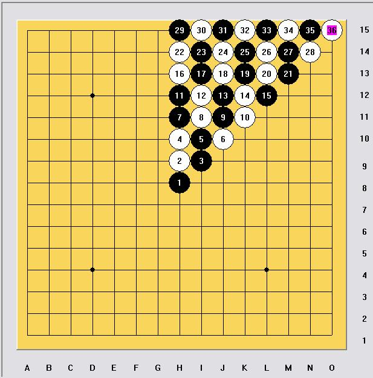

[学术讨论]白2为什么要跟随,为什么贴近天元最强?
#1 [学术讨论]白2为什么要跟随,为什么贴近天元最强? 作者：岳麓小棋后 发表时间：2009-1-9 22:09:12
你想过为什么吗?

很多人看过这个图，这个图要讲述的正是白2的强弱，棋面上的数字越大表示这个白2越弱，这是种很好理解却不容易说出为什么的解释。
［ 有志青年 于 2009-1-10 14:46:00 时奖励此帖[金币加 20 威望加1］
［此帖子已被 茗弈小刀 在 2009-4-22 20:02:50 编辑过］
#2 Re:白2为什么要跟随,为什么贴近天元最强? 作者：兔子哥哥 发表时间：2009-1-10 7:55:38
呵呵，五子棋不是下围棋，什么叫在这样的规律下，白2还想解放吗？除非你想输？听口气好像很不 满意五子棋这种12345按颜色聚集在一起才能赢的棋种，五子棋的本质就是要双方互相纠缠，互相牵制，你后手不想跟随就莫下五子了，再发明一种可以围死对方，又能成5，又能吃子的棋种喽！88#3 Re:白2为什么要跟随,为什么贴近天元最强? 作者：江南新绿 发表时间：2009-1-10 11:19:42
三手可以交换也是五子棋的规则。所以白2并不一定非要走在中心。
其次，利用一两手棋就能解释清楚五子棋，那五子棋也太简单一点了。
#4 Re:白2为什么要跟随,为什么贴近天元最强? 作者：飞哥 发表时间：2009-1-10 12:09:40
白2为什么要跟随?
因为现在FIR的规则是基于限制黑棋优势的理念而演变过来的，而不是为了增加开局变化而演变而成。
［ 茗弈小刀 于 2009-1-12 12:52:28 时奖励此帖[金币加 20 威望加1］
#5 Re:白2为什么要跟随,为什么贴近天元最强? 作者：岳麓小棋后 发表时间：2009-1-10 16:26:51
楼上三位基本上算是前辈高人了,晚生“初生牛犊不怕虎”，自不量力，不怕献丑，呵呵，五子棋的确不简单，但是最基本的东西，我希望用自己的方式去理解为什么这样
回复2楼，你从文章里那里看出“我在下围棋”呀，还有我想解释的是白2理论上的强弱分布规律，“白2还想解放吗？除非你想输？”这句话是“口气”话？？？“不满意五子棋”？？我不知道怎么理解。
回复3楼，“白2并不一定非要走在中心”，是呀，可以不走中心呀，不过比较弱而已。
“利用一两手棋就能解释清楚五子棋，那五子棋也太简单一点了”，这其实就是一篇解释为什么“1+1=2”的文章，五子棋的复杂当然不在于此了。
回复3楼，基本同意。
［ 茗弈小刀 于 2009-1-12 12:51:20 时奖励此帖[金币加 20 威望加1］